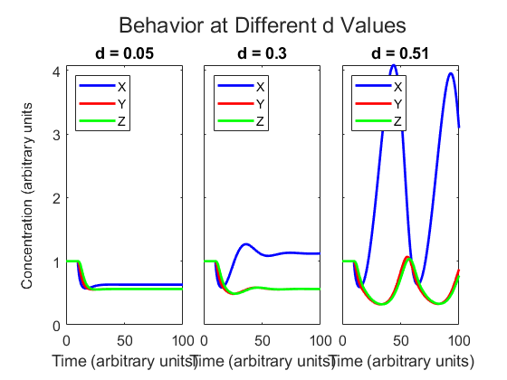

clear all
close all
tspan = linspace(0,100,300);
y0=ones(1,6);
p1=[1,1,1,0.05];
p2=[1,1,1,.3];
p3=[1,1,1,.51];
[tSol1,ySol1] = ode15s(@(tSol1,ySol1)simple_extended(tSol1,ySol1,p1),tspan,y0);
[tSol2,ySol2] = ode15s(@(tSol2,ySol2)simple_extended(tSol2,ySol2,p2),tspan,y0);
[tSol3,ySol3] = ode15s(@(tSol3,ySol3)simple_extended(tSol3,ySol3,p3),tspan,y0);
t = tiledlayout(1,3);
t1 = nexttile;
plot(tSol1,ySol1(:,1),'b','LineWidth',2)
hold on
plot(tSol1,ySol1(:,2),'r','LineWidth',2)
plot(tSol1,ySol1(:,3),'g','LineWidth',2)
xlabel('Time (arbitrary units)')
title('d = 0.05')
legend('X','Y','Z','Location','northwest')
set(gca,'FontSize',12)
hold off
t2 = nexttile;
plot(tSol2,ySol2(:,1),'b','LineWidth',2)
hold on
plot(tSol2,ySol2(:,2),'r','LineWidth',2)
plot(tSol2,ySol2(:,3),'g','LineWidth',2)
xlabel('Time (arbitrary units)')
title('d = 0.3')
legend('X','Y','Z','Location','northwest')
set(gca,'FontSize',12)
hold off
t3 = nexttile;
plot(tSol3,ySol3(:,1),'b','LineWidth',2)
hold on
plot(tSol3,ySol3(:,2),'r','LineWidth',2)
plot(tSol3,ySol3(:,3),'g','LineWidth',2)
xlabel('Time (arbitrary units)')
title('d = 0.51')
legend('X','Y','Z','Location','northwest')
set(gca,'FontSize',12)
hold off
linkaxes([t1,t2,t3],'y');
title(t, 'Behavior at Different d Values','FontSize',18);
ylabel(t,'Concentration (arbitrary units', 'FontSize',12);
t.TileSpacing = 'compact';
yticklabels([t2, t3],{});
axis([0 tspan(end) 0 max(ySol3(:,1))])
